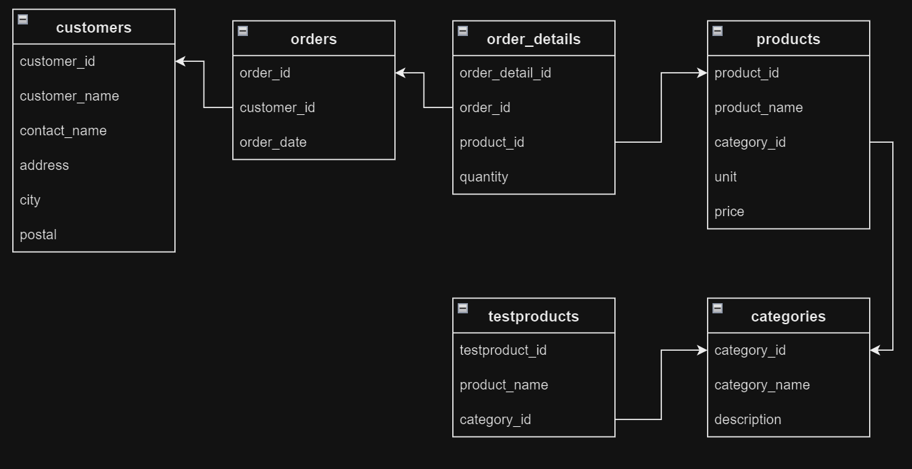

Sales Management Database System
Objective
The "Sales Management Database System" project was conceived to revolutionize the organization's sales operations. Its primary goal was to optimize sales analytics, improve data management, and empower the organization with actionable insights. Central to the project was the creation and implementation of a well-structured database system, consisting of key data tables.
Database Structure:
The project entailed the design and implementation of the following essential data tables:
- Categories Table: The "Categories" table served as the foundation for organizing products. It stored data on product categories, including
category IDs, names, and descriptions, enabling effective product categorization and management.
CREATE TABLE categories ( category_id SERIAL NOT NULL PRIMARY KEY, category_name VARCHAR(255), description VARCHAR(255) ); INSERT INTO categories (category_name, description) VALUES ('Beverages', 'Soft drinks, coffees, teas, beers, and ales'), ('Condiments', 'Sweet and savory sauces, relishes, spreads, and seasonings'), ('Confections', 'Desserts, candies, and sweet breads'), ('Dairy Products', 'Cheeses'), ('Grains/Cereals', 'Breads, crackers, pasta, and cereal'), ('Meat/Poultry', 'Prepared meats'), ('Produce', 'Dried fruit and bean curd'), ('Seafood', 'Seaweed and fish'); - Customers Table: The "Customers" table was pivotal for customer relationship management. It contained customer details such as IDs, names,
contact information, addresses, cities, postal codes, and countries. This facilitated comprehensive customer data management.
CREATE TABLE customers ( customer_id SERIAL NOT NULL PRIMARY KEY, customer_name VARCHAR(255), contact_name VARCHAR(255), address VARCHAR(255), city VARCHAR(255), postal_code VARCHAR(255), country VARCHAR(255) ); INSERT INTO customers (customer_name, contact_name, address, city, postal_code, country) VALUES ('Alfreds Futterkiste', 'Maria Anders', 'Obere Str. 57', 'Berlin', '12209', 'Germany'), ('Ana Trujillo Emparedados y helados', 'Ana Trujillo', 'Avda. de la Constitucion 2222', 'Mexico D.F.', '05021', 'Mexico'), ('Antonio Moreno Taquera', 'Antonio Moreno', 'Mataderos 2312', 'Mexico D.F.', '05023', 'Mexico'), ('Around the Horn', 'Thomas Hardy', '120 Hanover Sq.', 'London', 'WA1 1DP', 'UK'), ('Berglunds snabbkoep', 'Christina Berglund', 'Berguvsvegen 8', 'Lulea', 'S-958 22', 'Sweden'), ('Blauer See Delikatessen', 'Hanna Moos', 'Forsterstr. 57', 'Mannheim', '68306', 'Germany'), ('Blondel pere et fils', 'Frederique Citeaux', '24, place Kleber', 'Strasbourg', '67000', 'France'), ('Bolido Comidas preparadas', 'Martin Sommer', 'C/ Araquil, 67', 'Madrid', '28023', 'Spain'), ('Bon app', 'Laurence Lebihans', '12, rue des Bouchers', 'Marseille', '13008', 'France'), ('Wolski', 'Zbyszek', 'ul. Filtrowa 68', 'Walla', '01-012', 'Poland'); - Products Table: The "Products" table held critical information about the product catalog. It included product IDs, names, category IDs,
units, and pricing. This table provided an extensive overview of available products, supporting effective product management and sales tracking.
CREATE TABLE products ( product_id SERIAL NOT NULL PRIMARY KEY, product_name VARCHAR(255), category_id INT, unit VARCHAR(255), price DECIMAL(10, 2) ); INSERT INTO products (product_id, product_name, category_id, unit, price) VALUES (1, 'Chais', 1, '10 boxes x 20 bags', 18), (2, 'Chang', 1, '24 - 12 oz bottles', 19), (3, 'Aniseed Syrup', 2, '12 - 550 ml bottles', 10), (4, 'Chef Antons Cajun Seasoning', 2, '48 - 6 oz jars', 22), (5, 'Chef Antons Gumbo Mix', 2, '36 boxes', 21.35), (6, 'Grandmas Boysenberry Spread', 2, '12 - 8 oz jars', 25), (71, 'Flotemysost', 4, '10 - 500 g pkgs.', 21.5), (72, 'Mozzarella di Giovanni', 4, '24 - 200 g pkgs.', 34.8), (73, 'Red Kaviar', 8, '24 - 150 g jars', 15), (74, 'Longlife Tofu', 7, '5 kg pkg.', 10), (75, 'Rhenbreu Klosterbier', 1, '24 - 0.5 l bottles', 7.75), (76, 'Lakkalikeeri', 1, '500 ml ', 18), (77, 'Original Frankfurter gr�ne Soae', 2, '12 boxes', 13); - Orders Table: The "Orders" table tracked and managed sales orders. It recorded order IDs, customer IDs, and order dates. This
allowed for efficient sales order management, monitoring, and analysis.
CREATE TABLE orders ( order_id SERIAL NOT NULL PRIMARY KEY, customer_id INT, order_date DATE ); INSERT INTO orders (order_id, customer_id, order_date) VALUES (10248, 90, '2021-07-04'), (10249, 81, '2021-07-05'), (10264, 24, '2021-07-24'), (10265, 7, '2021-07-25'), (10266, 87, '2021-07-26'), (10288, 66, '2021-08-23'), (10305, 55, '2021-09-13'), (10321, 38, '2021-10-03'), (10322, 58, '2021-10-04'), (10323, 39, '2021-10-07'), (10756, 75, '2022-11-27'), (11077, 65, '2023-05-06'); - Order_Details Table: The "Order_Details" table contained detailed information about individual products within each order. It stored
product IDs, order IDs, and quantities, enabling precise tracking of product sales and order fulfillment.
CREATE TABLE order_details ( order_detail_id SERIAL NOT NULL PRIMARY KEY, order_id INT, product_id INT, quantity INT ); INSERT INTO order_details (order_id, product_id, quantity) VALUES (10248, 11, 12), (10248, 42, 10), (10248, 72, 5), (10249, 14, 9), (10249, 51, 40), (10250, 41, 10), (10250, 51, 35), (10282, 57, 2); - TestProducts Table: The "TestProducts" table played a specialized role in testing and development. It provided a controlled environment
for experimenting with new products and features, supporting the organization's product testing endeavors.
CREATE TABLE testproducts ( testproduct_id SERIAL NOT NULL PRIMARY KEY, product_name VARCHAR(255), category_id INT ); INSERT INTO testproducts (product_name, category_id) VALUES ('Johns Fruit Cake', 3), ('Marys Healthy Mix', 9), ('Peters Scary Stuff', 10), ('Jims Secret Recipe', 11), ('Elisabeths Best Apples', 12), ('Janes Favorite Cheese', 4), ('Billys Home Made Pizza', 13), ('Ellas Special Salmon', 8), ('Roberts Rich Spaghetti', 5), ('Mias Popular Ice', 14);
Some SQL queries:
Project Outcomes:
The successful implementation of these data tables facilitated advanced sales analytics, customer relationship management, and product catalog optimization. The database system empowered the organization to gain deep insights into customer behavior, sales trends, and inventory management, leading to data-driven decision-making and improved overall business performance.
SELECT: Return partial/ALL Columns
SELECT * FROM categories; -- to see the category table -- SELECT * FROM customers; -- to see the customers table-- SELECT * FROM products; -- to see the products table-- SELECT * FROM orders; -- to see the orders table-- SELECT * FROM order_details; -- to see the order_details table-- SELECT * FROM testproducts; -- to see the testproducts table-- SELECT customer_name, country FROM customers; -- Specify Columns --The SELECT DISTINCT Statement
SELECT DISTINCT country FROM customers; -- return only distinct (different) values -- SELECT COUNT(DISTINCT country) FROM customers; -- Return the number of different countries --WHERE: Filter Records
SELECT * FROM customers WHERE city = 'London'; -- return only the records where city is London -- SELECT * FROM customers WHERE customer_id = 19; -- return only the records where customer_id = 19 -- SELECT * FROM customers WHERE customer_id > 80; -- records where customer_id > 80 --ORDER BY: (Sort Data) The ORDER BY keyword is used to sort the result in ascending or descending order.
SELECT * FROM products ORDER BY price; -- Order by ascending order (ascending is default)-- SELECT * FROM products ORDER BY price DESC; -- Order by descending order --The LIMIT clause: The LIMIT clause is used to limit the maximum number of records to return.
SELECT * FROM customers LIMIT 20; -- Return only the 20 first records from the customers table --The OFFSET class: The OFFSET clause is used to specify where to start selecting the records to return.
SELECT * FROM customers LIMIT 20 OFFSET 40; -- Return 20 records, starting from the 41th record --MIN, MAX, COUNT, SUM, AVG, LIKE, ILIKE, IN, NOT IN, BETWEEN
- MIN: The MIN() function returns the smallest value of the selected column.
- MAX: The MAX() function returns the largest value of the selected column.
- COUNT: The COUNT() function returns the number of rows that matches a specified criterion.
- SUM: The SUM() function returns the total sum of a numeric column.
- AVG: The AVG() function returns the average value of a numeric column.
- LIKE: The LIKE operator is used in a WHERE clause to search for a specified pattern in a column.
- ILIKE: The LIKE operator is case sensitive, if you want to do a case insensitive search, use the ILIKE operator instead.
- IN: The IN operator allows you to specify a list of possible values in the WHERE clause.
- NOT IN: By using the NOT keyword in front of the IN operator, you return all records that are NOT any of the values in the list.
- BETWEEN: The BETWEEN operator selects values within a given range. The values can be numbers, text, or dates. The result returns all records that are between the numbers or alphabetically between the specified values.
SELECT MIN(price) FROM products; -- Return the lowest price in the products table -- SELECT MAX(price) FROM products; -- Return the highest price in the products table -- SELECT MIN(price) AS lowest_price FROM products; -- Return the lowest price, and name the column lowest_price -- SELECT COUNT(customer_id) FROM customers WHERE city = 'London'; -- Return the number of customers from the customers table -- SELECT SUM(quantity) FROM order_details; -- Return the total amount of ordered items -- SELECT AVG(price) FROM products; -- Return the average price of all the products in the products table -- SELECT AVG(price)::NUMERIC(10,2) FROM products; -- Return the average price of all the products, rounded to 2 decimals -- SELECT * FROM customers WHERE customer_name LIKE 'A%'; -- Return all customers with a name that starts with the letter 'A -- SELECT * FROM customers WHERE customer_name LIKE '%A%'; -- Return all customers with a name that contains the letter 'A' -- SELECT * FROM customers WHERE customer_name ILIKE '%A%'; -- Return all customers with a name that contains the letter 'A' or 'a' -- SELECT * FROM customers WHERE customer_name LIKE '%en'; -- Return all customers with a name that ends with the phrase 'en' -- SELECT * FROM customers WHERE city LIKE 'L_nd__'; -- Return all customers from a city that starts with 'L' followed by one wildcard character, then 'nd' -- -- and then two wildcard characters -- SELECT * FROM customers WHERE country IN ('Germany', 'France', 'UK'); -- Return all customers from 'Germany', France' or 'UK' -- SELECT * FROM customers WHERE country NOT IN ('Germany', 'France', 'UK'); -- Return all customers that are NOT from 'Germany', France' or 'UK' -- SELECT * FROM customers WHERE customer_id IN (SELECT customer_id FROM orders); -- Return all customers that have an order in the orders table -- SELECT * FROM customers WHERE customer_id NOT IN (SELECT customer_id FROM orders); -- Return all customers that have NOT placed any orders in the orders table -- SELECT * FROM Products WHERE Price BETWEEN 10 AND 15; -- Select all products with a price between 10 and 15 --NULL values are not counted.
The '_' wildcard represents a single character. It can be any character or number, but each _ represents one, and only one, character.
JOIN, INNER JOIN, RIGHT JOIN, FULL JOIN, CROSS JOIN operations:
- A JOIN clause is used to combine rows from two or more tables, based on a related column between them.
- Different types of Joins:
- INNER JOIN: Returns records that have matching values in both tables. In a CROSS JOIN, there is no specific condition for joining; it simply forms a combination of all possible pairs of rows from the involved tables.
- LEFT JOIN: Returns all records from the left table, and the matched records from the right table
- RIGHT JOIN: Returns all records from the right table, and the matched records from the left table
- FULL JOIN: Returns all records when there is a match in either left or right table
- CROSS JOIN: The CROSS JOIN keyword matches ALL records from the "left" table with EACH record from the "right" table.
- FULL OUTER JOIN EXCLUDING INNER JOIN: A FULL OUTER JOIN returns all rows from both tables and includes matching rows. The "EXCLUDING INNER JOIN" part suggests that you want to exclude rows that have a match (i.e., rows that would be part of an INNER JOIN) from the result set.
- UNION: The UNION operator is used to combine the result-set of two or more queries. The queries in the union must follow these rules:
- They must have the same number of columns
- The columns must have the same data types
- The columns must be in the same order
- UNION ALL: With the UNION operator, if some rows in the two queries returns the exact same result, only one row will be listed, because UNION selects only distinct values. Use UNION ALL to return duplicate values.
- FULL JOIN:

SELECT product_id, product_name, category_name FROM products INNER JOIN categories ON products.category_id = categories.category_id; -- Join products to categories using the category_id column -- SELECT testproduct_id, product_name, category_name FROM testproducts INNER JOIN categories ON testproducts.category_id = categories.category_id; -- Join testproducts to categories using the category_id column -- SELECT testproduct_id, product_name, category_name FROM testproducts FULL JOIN categories ON testproducts.category_id = categories.category_id; SELECT testproduct_id, product_name, category_name FROM testproducts CROSS JOIN categories; -- Join testproducts to categories using the CROSS JOIN keyword -- SELECT product_id, product_name FROM products UNION SELECT testproduct_id, product_name FROM testproducts ORDER BY product_id; -- Combine products and testproducts using the UNION operator -- SELECT product_id FROM products UNION SELECT testproduct_id FROM testproducts ORDER BY product_id; --GROUP BY: The GROUP BY clause groups rows that have the same values into summary rows.
SELECT COUNT(customer_id), country FROM customers GROUP BY country; -- Lists the number of customers in each country -- SELECT customers.customer_name, COUNT(orders.order_id) FROM orders LEFT JOIN customers ON orders.customer_id = customers.customer_id GROUP BY customer_name; -- The following SQL statement lists the number of orders made by each customer --HAVING: The HAVING clause was added to SQL because the WHERE clause cannot be used with aggregate functions
SELECT COUNT(customer_id), country FROM customers GROUP BY country HAVING COUNT(customer_id) > 5; -- List only countries that are represented more than 5 times -- SELECT order_details.order_id, SUM(products.price) FROM order_details LEFT JOIN products ON order_details.product_id = products.product_id GROUP BY order_id HAVING SUM(products.price) > 400.00; -- lists only orders with a total price of 400$ or more --EXISTS: The EXISTS operator is used to test for the existence of any record in a sub query.
SELECT customers.customer_name FROM customers WHERE EXISTS ( SELECT order_id FROM orders WHERE customer_id = customers.customer_id ); -- Return all customers that is represented in the orders table --NOT EXISTS: To check which customers that do not have any orders, we can use the NOT operator together with the EXISTS operator
SELECT customers.customer_name FROM customers WHERE NOT EXISTS ( SELECT order_id FROM orders WHERE customer_id = customers.customer_id ); -- Return all customers that is NOT represented in the orders table --ANY: The ANY operator allows you to perform a comparison between a single column value and a range of other values.
SELECT product_name FROM products WHERE product_id = ANY ( SELECT product_id FROM order_details WHERE quantity > 120 ); -- List products that have ANY records in the order_details table with a quantity larger than 120 --ALL: The ALL operator:
- returns a Boolean value as a result
- returns TRUE if ALL of the sub query values meet the condition
- is used with SELECT, WHERE and HAVING statements
SELECT product_name FROM products WHERE product_id = ALL ( SELECT product_id FROM order_details WHERE quantity > 10 ); -- List the products if ALL the records in the order_details with quantity larger than 10. --CASE: The CASE expression goes through conditions and returns a value when the first condition is met (like an if-then-else statement). Once a condition is true, it will stop reading and return the result. If no conditions are true, it returns the value in the ELSE clause. If there is no ELSE part and no conditions are true, it returns NULL.
SELECT product_name, CASE WHEN price < 10 THEN 'Low price product' WHEN price > 50 THEN 'High price product' ELSE 'Normal product' END FROM products; -- Return specific values if the price meets a specific condition -- SELECT product_name, CASE WHEN price < 10 THEN 'Low price product' WHEN price > 50 THEN 'High price product' ELSE 'Normal product' END AS "price category" FROM products; -- Same example, but with an alias for the case column --
Reference:
- Visit the "Learn about PostgreSQL"
- Visit the "DBMS Tutorials page"
- Visit my "Github repository on SQL" to learn about basics and some example projects.
- Visit my "Github repository" to learn about databases.